Master the features of Pop Song Chord Book
Jump to a specific section:
Clicking on any song brings you to the detail view. Here you can see the chords, structure, and playback controls. The interface is designed to be clean and easy to read while you play.
Feel free to make your own descriptions like : Intro, Verse, Chorus, Pre-Chorus or even some lyrics cue tips as you see fit. Whatever helps you to understand the structure of the song.
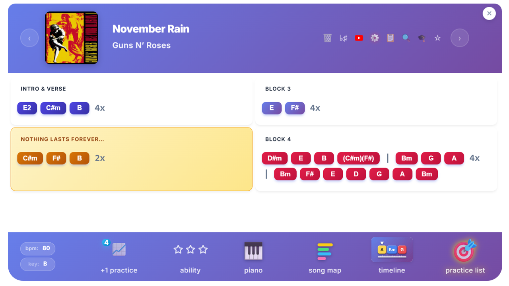
When dealing with slash chords like C/E (1st inversion) or C/G (2nd inversion), a shorter notation method is often used:
• C3 = 1st Inversion (notes: E G C). The C note is the third note in the triad.
• C2 = 2nd Inversion (notes: G C E). The C note is the second note in the triad.
• C (no number) = Root position (notes: C E G).
This makes it quick to read and write while keeping the interface clean, but feel free to use whatever notation you prefer!
Organize your repertoire by creating custom setlists. Click the "+" button in the setlist section to create a new list, give it a name, and start adding your favorite songs for easy access during practice or performance.
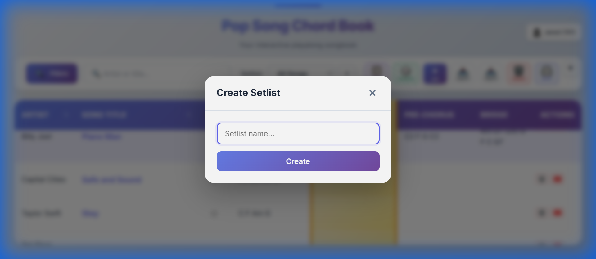
Need help with a chord voicing? Switch to the Piano view to see exactly which keys to press. The diagrams light up to show you the precise fingering for each chord in the song.
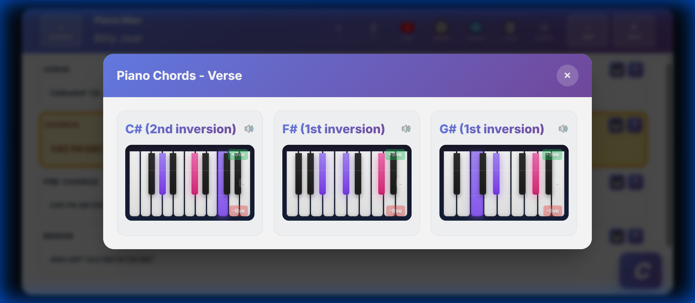
Toggle to Guitar mode to see high-quality fingering diagrams for every chord in your song. This view is perfect for both beginners and experienced players.
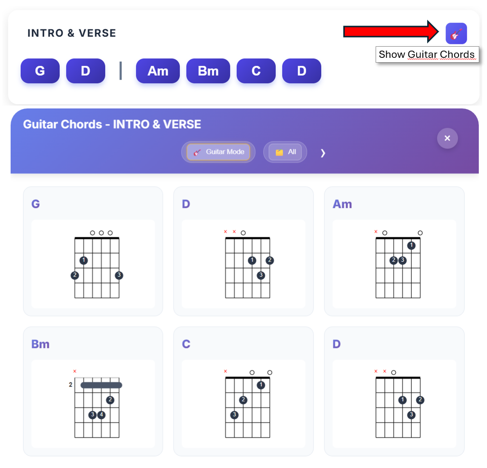
The Capo feature allows you to transpose your song visually without changing the target sound. This is perfect for guitar players who want to use familiar chord shapes while playing in a different key.
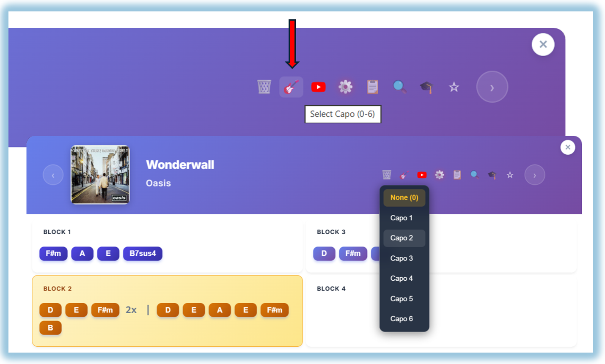
Want to customize a song? Open the editor to modify chords. You can choose from diatonic chords valid for the key or borrow chords to spice up the progression.
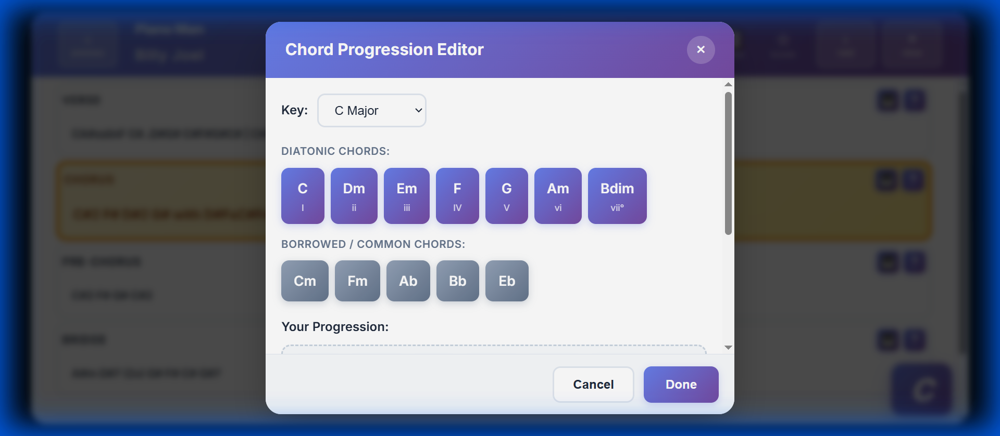
Practice your scales! Looking for songs in a specific key? Use the filter menu to select a key (e.g., C Major). The song list will update to show only songs that match your criteria.
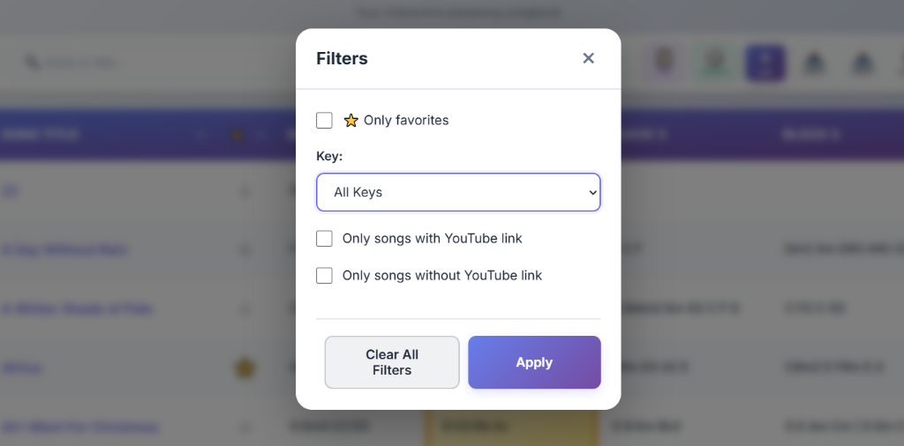
Need to change the key to suit your voice? Use the transpose controls (+ / -) on the detail page. All chords in the song will instantly update to the new key.
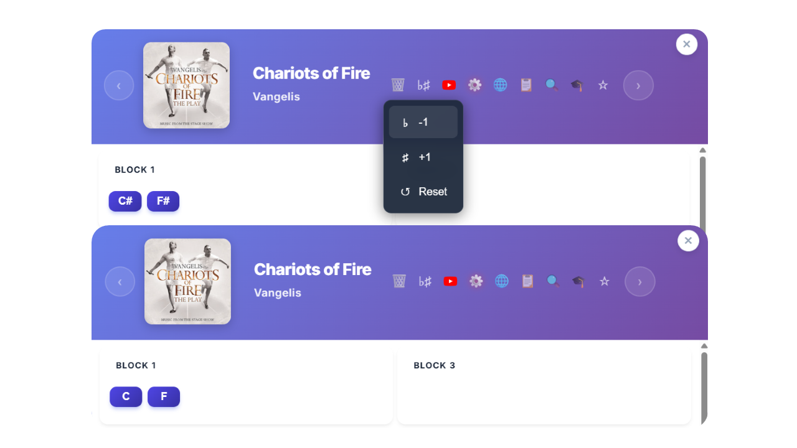
Need to see the words while you play? Open the Chord Timeline screen and see the lyrics appear just like a karaoke system.
The lyrics are prompted just-in-time exactly when you need them. Just like a professional karaoke setup, the display shows:
To use the teleprompter, you need time-synced lyrics (LRC format) from sites like
lrclib.net or LyricRadar.com. Paste the text containing
[00:12.34] timestamps into the Lyrics field.
Note: You can use the LyricSync setting in the song details (Gear icon) to fine-tune the timing if the lyrics are slightly off.
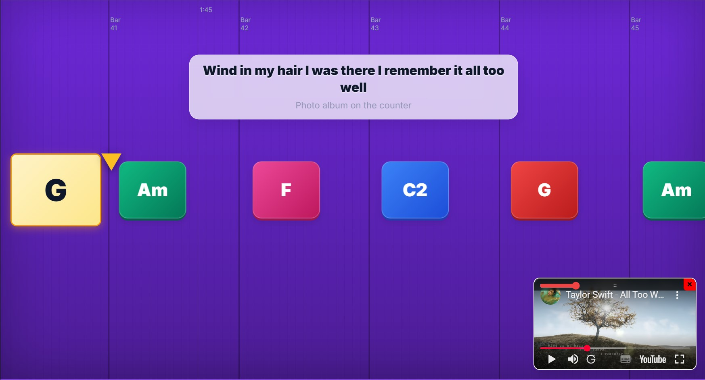
Join up with your band members in the Band Practice session and start playing from a synchronized timeline together.
Whether you are in a rehearsal room or playing a live show, Band Practice ensures that the piano player, guitarist, singer, and other members are all looking at the exact same chord block or lyric line at the exact same millisecond. No more shouting out chord changes or getting out of sync!
Manage your music students, schedule lessons, organize setlists, and track individual learning goals in real-time.
The Teacher Dashboard is a comprehensive hub for music educators. It enables teachers to schedule lessons, build customized lesson plans, organize setlists for beginner or advanced groups, and track the exact progress of every student.
TEACHER-XXXXXX) and share it with your students.
Connected students gain access to their own personalized Student Dashboard. It provides a clear summary of their assigned homework, next lesson schedule, and a checklist of progress goals updated by their teacher to guide their practice.
Keep track of your repertoire with the 🎯 icon in the footer. Use the Practice button on the main list to jump to songs that need attention. Every session, hit +1 Practice 📈 to build your streak!
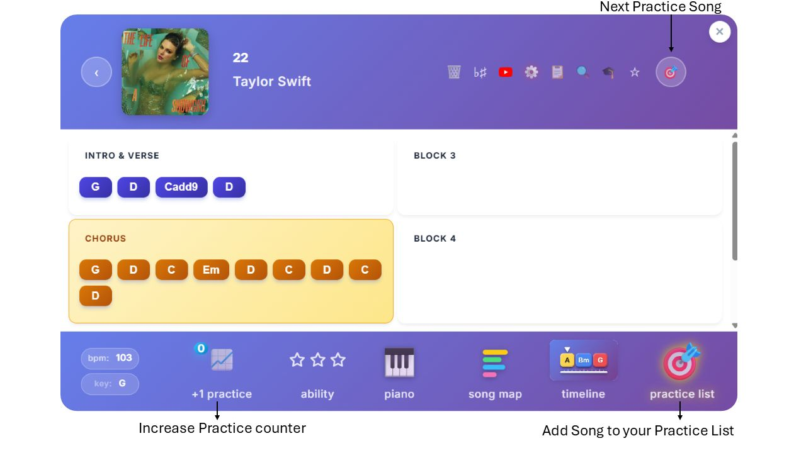
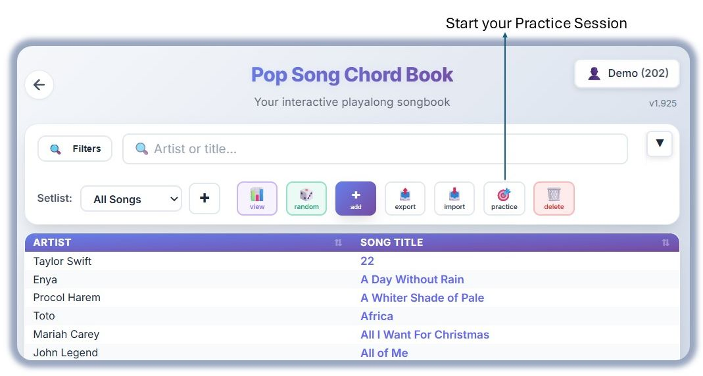
The Chord Trainer is your personal teacher for mastering piano chords. It features interactive feedback, dynamic key limits, and four distinct levels to build your muscle memory.
Enter Song Practice mode by clicking 🎓 on the header of the song detail screen. This takes the actual chords from that song and challenges you to play them in order.
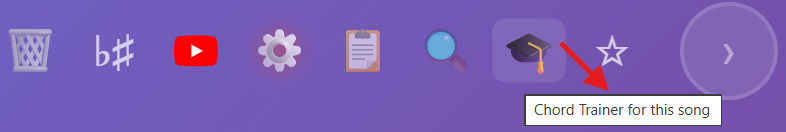
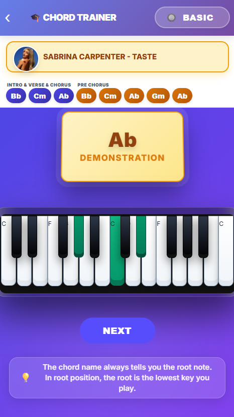
The Chord Timeline is an advanced feature that allows you to see chords move across a playhead in real-time. This is perfect for complex songs where you need to see the exact timing of every chord change.
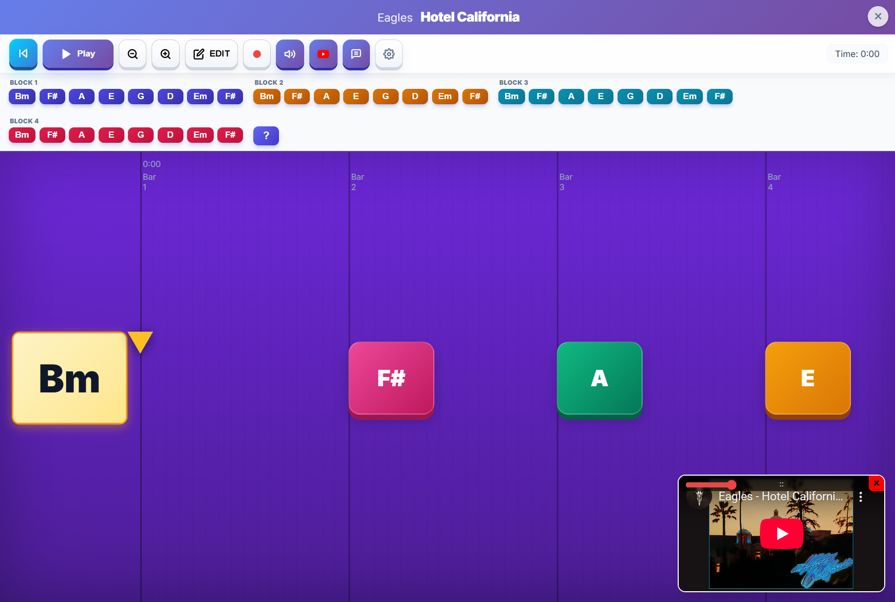
Did your recording end up slightly off-beat due to input delay? You can quickly fix it:
To ensure the parser identifies your chords perfectly:
Pro Tip: By providing a quantized, 3-note-minimum MIDI file on Channel 1, you'll get perfect results every time!
Pure Timeline Mode – The Chord Timeline in Landscape mode on Mobile Phone Displays
For a great PLAY along mode while using the app on a mobile phone, just ROTATE the screen to landscape mode and experience the Pure Timeline Mode. No editing, no buttons, just the Chords and Lyrics.
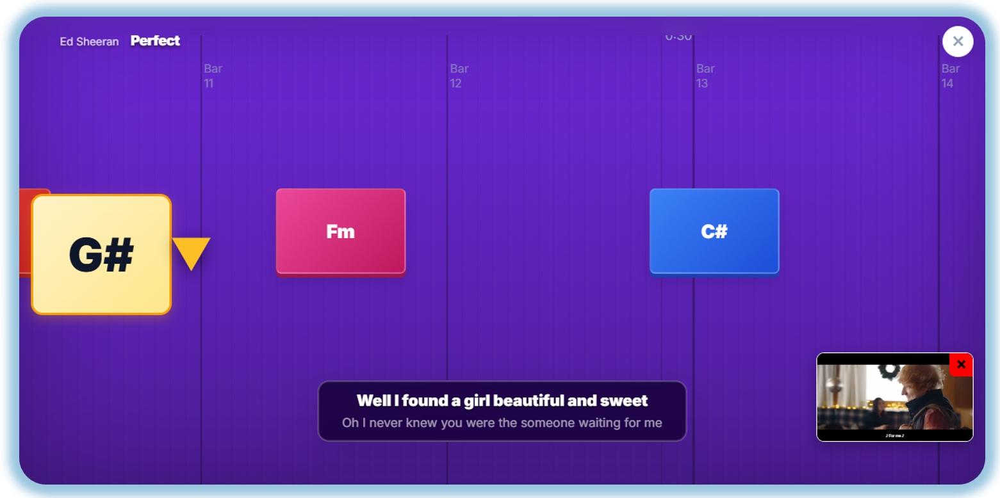
Below is a short example of how a JSON file for the Chord Timeline feature should be structured:
{
"name": "Advice for the Young at Heart",
"tempo": 122,
"duration": 534.59,
"chords": [
{"name": "Fmaj7", "time": 0.00},
{"name": "Em7", "time": 7.87},
{"name": "Em7", "time": 527.29}
]
}
The Song Map offers a high-level visualization of the entire song's layout. It's the perfect tool for understanding complex arrangements at a glance and navigating through the track effortlessly.
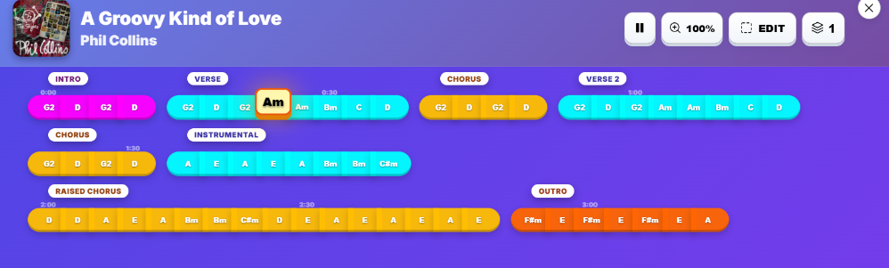
Connect your MIDI keyboard to your device to play and record chords directly into the app. This feature transforms the Pop Song Chord Book into a powerful pro-grade practice and arrangement tool.
By default, MIDI support is OFF to prevent users without keyboards from being bothered by browser permission popups. To turn it on:
Note: MIDI support requires a modern browser (Chrome, Edge, or Opera) and a USB/Bluetooth MIDI keyboard.
For the best experience, you can install this website as an app on your phone. This gives you a full-screen view (removing the browser address bar) and makes the chord charts even easier to read.
1. Tap the Share button
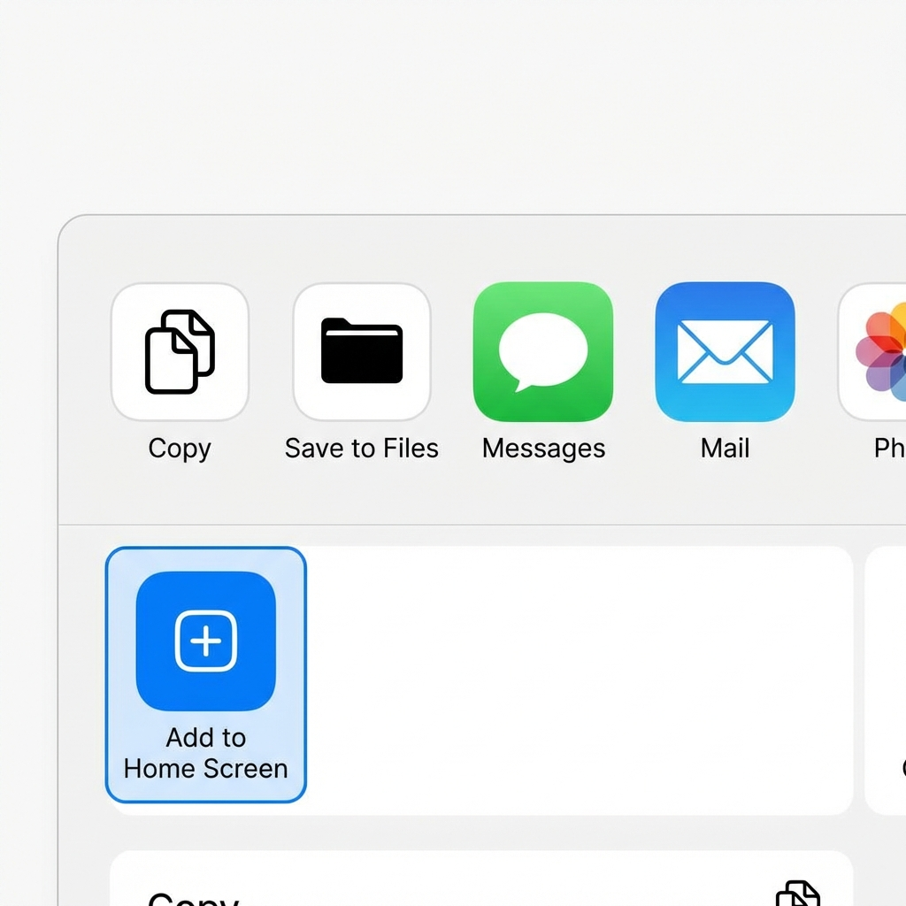
at the bottom of the screen.1. Tap the Menu (three dots) in the top right corner.
2. Tap "Add to Home screen" or "Install App".
3. Follow the prompts to install.
For the best experience, we highly recommend YouTube Premium. This allows you to jam along with songs uninterrupted, without any annoying advertisements breaking your practice flow.
While the app is mobile-friendly, we suggest doing heavy editing on a PC or a large tablet. Mobile screens are quite compact, and precision editing is much easier with the extra screen real estate and a mouse.
When adding a new song, always include the YouTube video URL for sync. Additionally, using tools like LyricRadar.com or lrclib.net is the fastest way to get high-quality timed lyrics for the teleprompter.
Don't forget to use the "Install as App" option documented above! It removes the browser UI and gives you more room for your chord sheets, making it feel like a professional instrument tool.
We're always adding new features to help you play. Keep an eye on this section for more professional tips and tricks to master your repertoire!